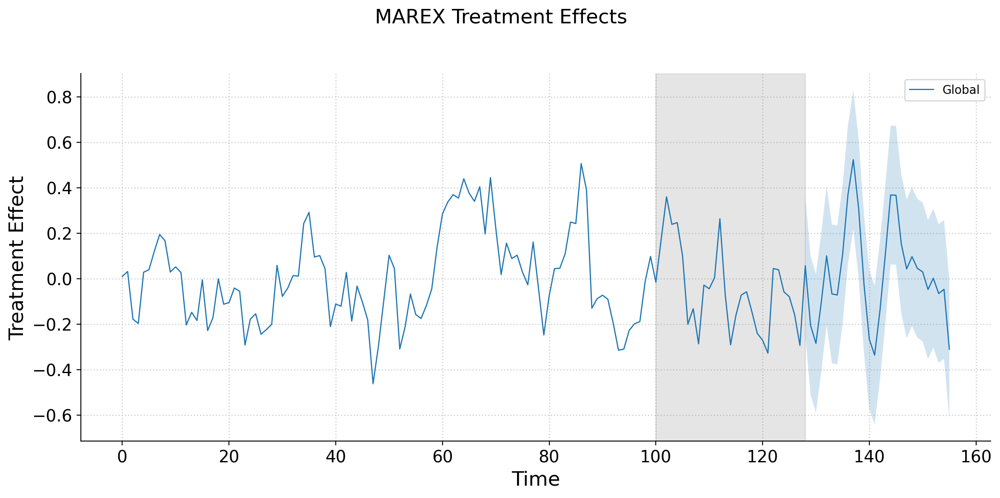

Jared Amani Greathouse
- PhD Candidate, Public Policy, Georgia State University
- Advisor: Jason Coupet
- Specialization: Econometrics and Causal Inference
- Focus: Synthetic Control Methods, High-Dimensional Panel Data, Machine Learning for Treatment Effects
The SCM estimator constructs a weighted combination of control units to approximate the treated unit pre-treatment. It solves:
\[ \mathbf{w}^{\mathrm{SCM}} = \underset{\mathbf{w} \in \mathcal{W}_{\mathrm{conv}}}{\operatorname*{argmin}} \; \left\| \mathbf{y}_1 - \mathbf{Y}_0 \mathbf{w} \right\|_2^2, \quad \mathcal{W}_{\mathrm{conv}} = \{\mathbf{w} \ge 0, \; \mathbf{1}^\top \mathbf{w} = 1 \} \]
The synthetic control prediction for any time \(t\) is
\[ \hat{\mathbf{y}}_1^{\mathrm{SCM}} = \mathbf{Y}_0 \mathbf{w}^{\mathrm{SCM}} = \sum_{j \in \mathcal{J}_0} w_j^{\mathrm{SCM}} \, y_{jt} \]
Intuition: A weighted average of controls can resemble the treated unit better than any single control or the simple mean of all controls. Deviations post-treatment estimate the causal effect.
Suite of tools for policy evaluation using panel data
Supports dozens of estimators, using techniques from matrix factorization methods to forward selection and proximal inference methods
Consolidates numerous SCMs across multiple software ecosystems into Python with one singular syntax (e.g., R or MATLAB).
mlsynth\[ \mathcal{L}_{\text{Base}}(\mathbf{w},\mathbf{v}) = \sum_{k=1}^K \Big( \mathbf{f}_{I_k}^\top \mathbf{1} \Big) \Big[ \underbrace{\|\bar{\mathbf{x}}_k - \mathbf{X}_{I_k}^\top \mathbf{w}_{I_k}\|_2^2}_{\text{selecting treated units}} + \underbrace{\|\bar{\mathbf{x}}_k - \mathbf{X}_{I_k}^\top \mathbf{v}_{I_k}\|_2^2}_{\text{selecting control units}} \Big]. \]
Selects both treated and control units simultaneously
Enforces cluster structure (if specified), budgets, and cardinality constraints
Penalizes units far from cluster means to ensure representativeness
| Feature | Standard Experiment | MAREX |
|---|---|---|
| Validity in small/clustered marketing tests | Often compromised | Maintains validity via synthetic control optimization |
| Budget-aware | Sometimes requires ad hoc adjustments | Built-in into optimization |
| Cluster-aware | Possible but may reduce power | Enforced and balanced by design |
| Ethical / feasibility constraints | Manual adjustments | Integrated constraints |
| Scenario testing / iteration | Limited by randomization and manual setup | Overnight simulations with multiple configurations |
| Representativeness of treated/control | Needs careful design, can fail | Ensured via cluster-weighted synthetic controls |
Suppose we have 21 units. We wish to roll out an intervention that we cannot randomize (say, differences in closing times/work hours)
